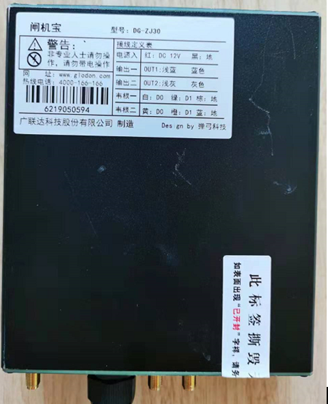

闸机宝控制器
用户手册
北京弹弓科技有限公司
2020 年 2 月 4 号
产品概述
闸机宝控制器一款是针对道闸，翼闸，辊闸，全高闸等闸机开关控制的专用设备，该控制器支持标准的韦根26 协议，支持RFID标签无感开闸， 支持IC卡等多种方式打开闸机门，同时可以将刷卡考勤数据通过4G或LAN 传输给指定的云管理平台中心。
产品介绍
产品实物图片

产品参数
| 项目 | 参数 | 备注 |
|---|---|---|
| 尺寸 | 150*132*39mm | |
| 颜色 | 黑色 | |
| 供电方式 | DC 12V—24V 2A | |
| 工作温度 | -25℃ - 60℃ | |
| 网络 | 4G-LTE （支持联通，移动）， 支持100M有线网线，支持LTE-TDD/LTE-FDD/TD-CDMA/UMTS/EDGE/GPRS/GSM | |
| 流量卡 | 内置联通流量卡 | |
| UHF RFID工作频率 | 840~960Mhz | |
| 支持协议 | EPC GEN2 / ISO 18000-6C | |
| 最大射频输出功率 | +30dBm （1W） | |
| 天线 | UHF 天线外置， 4G天线外置 | |
| 信号输入 | 支持2路韦根输入， 2路UART输入 | |
| 闸机控制输出 | 支持 2路开关量输出， 2路韦根输出 | |
| RFID 读卡 | 支持2路RFID读头 |
产品功能
a) 支持远程无线升级 b) 支持UHF 无感开闸机 c) 支持韦根协议的人脸设备开闸 d) 支持IC卡开闸 e) 指示灯状态
指示灯说明
| 序号 | 丝印 | 说明 | 功能说明 | 备注 |
|---|---|---|---|---|
| 1 | Power | 电源指示灯 | 亮: 设备供电正常 灭: 设备没有供电或供电异常 |
|
| 2 | RFID | RFID状态指示灯 | 亮: RFID模块正常 灭: RFID模块异常 |
|
| 3 | SYS | 网络状态指示灯 | 亮: 4G网络正常 灭: 网络无法联通 |
|
| 4 | RUN | 预留指示灯 | 灭：正常 |
产品安装
| 线 | 标识 | 功能说明 | 备注 |
|---|---|---|---|
| 电源 | 红： 12V或24V 黑： 地 |
控制器电源输入 | |
| 韦根一 | 出门信号 | 若对接指定的WG2052 板， 则将韦根一端子接入到WG2052 板子的出门信号口即可， 无需接开关量输出一 | |
| 韦根二 | 进门信号 | 若对接指定的WG2052 板， 则将韦根二端子接入到WG2052 板子的进门信号口即可， 无需接开关量输出一 | |
| 开关量输出一 | 出门开闸信号 | 若不接入劳务实名制的大屏， 或接入第三方闸机的话， 则将此开关量输出一的2根线接入到闸机的出门开闸信号口即可 | |
| 开关量输出二 | 进门开闸信号 | 若不接入劳务实名制的大屏， 或接入第三方闸机的话， 则将此开关量输出二的2根线接入到闸机的进门开闸信号口即可 | |
| 开关量输出三 | 预留 | ||
| 开关量输出四 | 预留 | ||
| 馈线口 | 端口1：出门馈线接口 端口2：进门馈线接口 |
馈线要直接连接到RFID的天线 | |
| 4G接口 | 4G天线接口 | 外置4G天线，确保网络正常 |
根据以上线序安装到对应的闸机主板上
售后服务
按照国家三包规定实行，一年内免费保修。